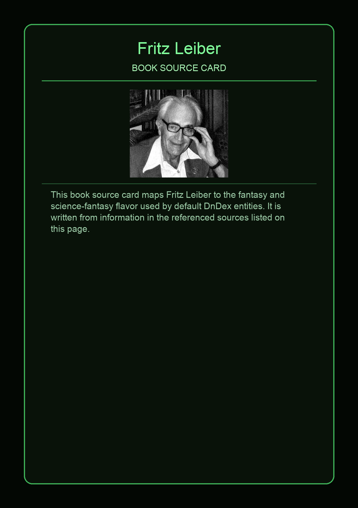

This page provides an original overview of Fritz Leiber as a book inspiration source for the default DnDex card set. For factual detail, use the attributed reference links on this page.
This page aggregates references to the source material behind Name Lore entries.